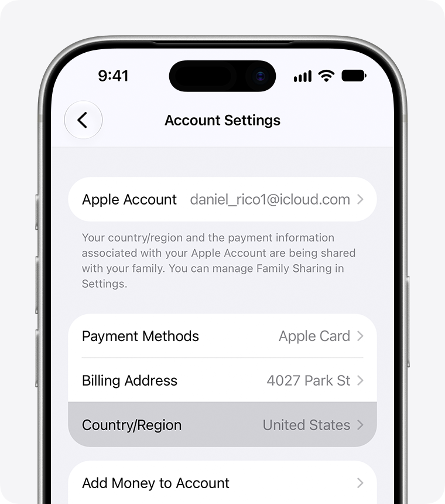

1. Как пользоваться этим руководством
Не нужно запоминать все функции сразу. Сначала научись получать один полезный результат: понятное письмо, план недели или разбор документа. Затем добавляй файлы, проекты и выполнение задач.
Три маршрута:
| Твоя задача | С чего начать | Что получится |
|---|---|---|
| Никогда не пользовался | Установка, первый запрос, формула задачи | Первый полезный ответ за один подход |
| Уже задаёшь вопросы | Файлы, поиск, проекты, память | Помощник, который понимает контекст работы |
| Хочешь готовые материалы | Work, Office, Codex, автоматизация | Документ, таблица, презентация или выполненная операция |
Материал устроен как справочник. Можно переходить по оглавлению и возвращаться к нужной главе. PDF работает без интернета; внешние ссылки открываются при подключении.
В комплекте есть отдельный PDF «ChatGPT в Excel, Word и PowerPoint»: установка надстройки, изображения кнопок, упражнения и решение проблем. Здесь объясняется, когда выбирать этот способ работы.
Как читать отметки в таблицах: «Да» означает наличие функции, но не бесконечное использование. «Огр.» означает небольшой или отдельный лимит. «По доступу» означает зависимость от аккаунта, региона, версии приложения или администратора организации. Стоимость указана в долларах США, если не сказано иначе; налоги и цена магазина приложений могут отличаться.
Твоя цель на старте: не изучить все кнопки, а научиться объяснять задачу и проверять результат. Даже сильной модели нужны исходные данные.
2. ChatGPT, GPT, Chat, Work и Codex: что есть что
ChatGPT - сервис OpenAI, в котором ты общаешься с ИИ и поручаешь ему работу. GPT - семейство моделей, то есть программ, которые обрабатывают запрос и формируют ответ. Это примерно как приложение для поездок и двигатель автомобиля: разные уровни одной системы.
Тариф определяет доступ и объём использования. Модель влияет на то, как решается задача. Режим определяет организацию работы. Покупка Pro не превращает любой разговор в выполнение действий на компьютере.
| Где работаешь | Простое объяснение | Пример |
|---|---|---|
| Chat / Чат | Обсуждаешь, спрашиваешь, уточняешь | «Помоги продумать письмо клиенту» |
| Work / Работа | Поручаешь задачу с готовым результатом | «Из этих заметок создай отчёт и таблицу действий» |
| Codex | Работаешь с папками, кодом, техническими задачами и доступными инструментами | «Собери отчёт из файлов и сохрани результат в папку» |
| ChatGPT внутри Office | Общение в боковой панели открытого Word, Excel или PowerPoint | «Исправь формулу в этой книге» |
Work и Codex во многом используют общие возможности. Для обычных рабочих материалов удобнее начать с Work. Codex полезен для сайта, обработки множества файлов, технической автоматизации и задач, где надо запускать команды. Знать программирование для постановки задачи не обязательно.
Work - не тариф Business. Work означает способ выполнения задачи, Business - подписку для организации. Модель Pro - не то же самое, что подписка Pro. Подписка даёт доступ к нескольким моделям и функциям.
Источники: Chat, Work и Codex, начало работы с Work.
3. Установка на Windows и Mac
Самый быстрый способ: в браузере
- Открой chatgpt.com.
- Выбери вход или создание аккаунта. Используй свою почту либо доступный способ входа через Apple, Google или Microsoft.
- Подтверди адрес, если сервис попросит. Для обычной регистрации не нужно заранее покупать иностранный номер.
- Запиши, каким способом входил. Вход через другую почту может привести в другой аккаунт без твоей подписки.
- Отправь простой учебный запрос. Установка приложения для этого не нужна.
Приложение на Windows
Открой официальную страницу загрузки, выбери Windows, запусти предложенный установщик и войди в тот же аккаунт. Следуй требованиям на странице установки: инструкции для старого приложения ChatGPT Classic могут отличаться от новой программы. На рабочем компьютере установку иногда разрешает администратор.
Приложение на Mac
На той же странице выбери macOS, открой загруженный файл и выполни шаги установщика. Если появляется окно с переносом значка, перетащи приложение в Applications / Программы. Запусти его оттуда и войди. Для нового приложения официально указана macOS 14 или новее; поддерживаются Apple Silicon и Intel.
В новом приложении доступны ChatGPT и Codex. Внутри ChatGPT переключаются Chat и Work. Если раньше был установлен Codex, после обновления название приложения может стать ChatGPT, а проекты Codex сохраниться. ChatGPT Classic может остаться рядом: наличие двух значков не означает два платных аккаунта.
Проверка: отправь «Предложи три простые задачи для моего первого дня с ИИ». Затем найди этот разговор с того же аккаунта в браузере. История локальных задач Codex устроена отдельно.
Источники: загрузка, требования macOS, обзор Work и Codex.
4. Установка на iPhone и Android
iPhone
- Открой страницу загрузки ChatGPT и нажми iOS. Это надёжнее поиска похожих названий в магазине.
- В App Store проверь, что приложение выпущено OpenAI.
- Нажми «Загрузить», открой приложение и войди привычным способом.
- Разрешай микрофон или фото, когда действительно используешь соответствующую функцию.
- Сделай тест: напиши вопрос, приложи учебную фотографию, попробуй голос.
Android
На той же официальной странице нажми Android. В Google Play проверь разработчика OpenAI, установи приложение и войди. Если магазин сообщает о несовместимости, проверь требования и обновления телефона. Не подменяй официальное приложение случайным APK из рекламы.
Если приложение отсутствует в магазине
Это может зависеть от региона магазина, страны использования, возраста аккаунта и совместимости устройства. Сначала попробуй веб-версию в браузере, если сервис поддерживается в твоей стране. Само наличие приложения в магазине не гарантирует, что сервис разрешён в стране фактического использования.
Одна подписка - один аккаунт, несколько твоих устройств. Не покупай ещё одну подписку только потому, что переходишь с телефона на компьютер. Сначала проверь почту аккаунта. Подпиской, купленной в App Store или Google Play, обычно управляют через соответствующий магазин.
Что удобнее на телефоне: надиктовать мысли, показать предмет на фото, потренировать разговор на иностранном языке, прочитать результат Work. Большие таблицы и точное оформление проще проверять на компьютере.
Источники: официальные приложения, правила использования аккаунта.
5. Россия, VPN и смена региона: четыре разные проверки
Нужно отдельно проверить доступ к сайту, регион магазина, правила сервиса и возможность оплаты. Одна настройка не решает всё сразу.
| Что меняешь | На что это влияет | Чего не гарантирует |
|---|---|---|
| Язык телефона | Язык меню и приложений | Появление сервиса или подписки |
| Страна Apple Account / Google Play | Ассортимент магазина и способы оплаты | Разрешение пользоваться сервисом из России |
| VPN | Маршрут соединения и видимый сетевой адрес | Соответствие правилам OpenAI, оплату и сохранность аккаунта |
| Платный тариф | Набор функций и лимиты | Снятие региональных ограничений |
На дату проверки Россия отсутствует в списке поддерживаемых стран ChatGPT. OpenAI предупреждает, что доступ из неподдерживаемых стран может привести к ограничению аккаунта. Поэтому инструкция «поставь VPN, смени регион - и всё гарантированно работает» неверна. Техническое подключение не равно официальной поддержке. Работа из российской сети в рамках этой инструкции не тестировалась.
VPN - программа, которая направляет интернет-соединение через другой сервер. Это объяснение технологии, а не обещание устойчивого доступа. Не существует подтверждённого универсального правила «страна VPN, номер телефона и карта должны совпадать - тогда блокировки исключены».
Если ты находишься в поддерживаемой стране, а магазин остался от прежнего места проживания, проверь официальную процедуру смены страны на следующей странице. Если находишься в России, не считай эту процедуру способом получить разрешение на использование ChatGPT.
Для занятий можно применять ту же формулу запросов в доступной альтернативе: например, Алисе AI для текстов и документов. Возможности, качество и правила обработки данных у альтернатив отличаются. Выбор GPT-модели внутри другого сервиса не даёт тебе подписку ChatGPT и не переносит проекты, память или Work.
Дополнительные сервисы для учебной практики
| Сервис | Как начать | Что попробовать |
|---|---|---|
| Алиса AI | Открыть официальный сайт и войти своим аккаунтом Яндекса | Письмо, объяснение, разбор прикреплённого документа |
| ГигаЧат | Открыть giga.chat и войти предложенным способом, включая телефон / Сбер ID | Текст, идеи, подготовка к выступлению |
| DeepSeek | Перейти с официального сайта в чат или магазин приложения | Объяснения, рассуждения, учебные задачи |
ГигаЧат официально ориентирован в том числе на работу в России; его справка советует отключить VPN при проблемах входа. Это хороший пример того, почему один и тот же сетевой режим не подходит всем сервисам. У DeepSeek отдельно проверяй доступ на своём устройстве: здесь нет обещания бесперебойной работы из любой сети.
Первый тест альтернативы: открой сервис, отправь запрос «Преврати эти заметки в понятное письмо, не добавляя фактов», затем приложи небольшой обезличенный документ, если функция доступна. Проверь, читается ли файл и сохраняется ли результат. Не покупай подписку до этого теста.
Сайты, которые предлагают много моделей в одном окне, называют агрегаторами. У них собственные тарифы, лимиты и правила обработки данных. Надпись «GPT» в таком сервисе не подтверждает, что доступны все функции оригинального ChatGPT. Пароль от ChatGPT для работы в стороннем агрегаторе передавать не нужно.
Источники по альтернативам: Алиса AI и документы, начало работы с ГигаЧат, региональные условия ГигаЧат, официальная загрузка DeepSeek.
Источники: поддерживаемые страны OpenAI, доступ из неподдерживаемых стран, документы в Алисе AI.
6. Где менять страну магазина
Apple: когда страна аккаунта действительно изменилась
На iPhone открой Настройки → твоё имя → Медиаматериалы и покупки → Просмотреть → Страна/регион → Изменить страну или регион. Названия могут немного отличаться в переводе iOS.

До изменения Apple предлагает израсходовать остаток средств, отменить мешающие смене подписки и дождаться окончания оплаченного периода. Может потребоваться выйти из семейной группы и указать действительные платёжные данные новой страны. Часть покупок может стать недоступной.
Не меняй страну наугад только ради одного приложения. Сначала прочитай, что произойдёт с подписками и покупками, которые уже используешь.
Google Play
Открой Google Play → значок профиля → Настройки → Общие → Настройки аккаунта и устройства → Страна и профили. Выбери новую страну, если она предложена, и выполни требования по местонахождению и местному способу оплаты.
Google требует находиться в новой стране и иметь подходящий способ оплаты. Между изменениями действует ожидание не менее 90 дней; семейная группа может препятствовать смене. Обновление профиля иногда занимает до 48 часов. Если пункта нет, повторные нажатия или изменение языка не заменят выполнение условий.
Эти шаги меняют магазин приложений. Они не меняют правила ChatGPT, Claude или Google AI. Не используй выдуманные адреса, чужие платёжные данные и чужие аккаунты.
Если нужен только учебный результат: сообщи преподавателю, какой сервис открывается и какое устройство у тебя есть. Упражнение на письмо, план или сводку можно перенести в доступный инструмент. Подключение к Office и управление компьютером переносится не всегда.
Источники: смена страны Apple Account, смена страны Google Play.
7. Первый разговор: пошаговая практика
Для начала выбери знакомую задачу. Например, напомнить клиенту о материалах для проекта. Не начинай с важного финансового расчёта или документа, который сам не сможешь проверить.
- Открой новый чат.
- Опиши ситуацию двумя-тремя предложениями.
- Скажи, какой результат нужен и для кого.
- Укажи ограничения: длину, тон, факты, которых нельзя менять.
- Прочитай ответ и попроси конкретную доработку.
Готовый запрос:
Помоги написать клиенту напоминание. Мы договорились получить фотографии до пятницы, сегодня понедельник, материалы пока не пришли. Без фотографий не можем закончить макет. Нужно сохранить спокойный деловой тон и договориться о новой дате. Напиши два варианта до 80 слов. Не выдумывай причины задержки.
Теперь доработай:
Во втором варианте убери канцелярские выражения. Добавь один понятный вопрос о сроке. Сохрани дружелюбие, но не извиняйся за само напоминание.
Как проверить результат: даты соответствуют ситуации; обещаний от твоего имени не добавлено; клиенту понятно, что от него требуется; текст звучит как твой.
Если ответ не подошёл, это не означает, что «ИИ не работает». Часто ему не хватило примера, фактов или критериев. Можно прямо сказать: «Слишком официально», «Сделай короче вдвое», «Сначала задай мне три вопроса».
Для продолжения этой задачи используй тот же чат. Для другой темы начни новый. Так меньше риск, что помощник перенесёт детали прошлого клиента в новый текст.
8. Что находится на экране
Расположение кнопок зависит от версии. Запоминай смысл элемента и английское название: это помогает, если перевод ещё не появился.
| Элемент | Зачем нужен | Как использовать |
|---|---|---|
| New chat / Новый чат | Новый разговор | Начинай здесь отдельную тему |
| Поле сообщения | Постановка задачи | Можно писать обычным языком |
| + / скрепка | Файлы и инструменты | Приложи документ или выбери доступную функцию |
| Название модели | Выбор модели и глубины рассуждений | Для сложной задачи открой доступные варианты |
| Chat / Work | Переключение способа работы | Обсуждение либо выполнение задачи |
| Projects / Проекты | Материалы одной большой темы | Собери файлы, чаты и правила проекта |
| Plugins / Плагины | Дополнительные инструменты | Подключи нужный сервис или готовый рабочий процесс |
| Settings / Настройки | Память, данные, внешний вид | Проверь персонализацию и конфиденциальность |
| Scheduled / По расписанию | Повторяющиеся задачи | Посмотри, что действительно запланировано |
Полезные привычки: перед отправкой проверь, какой файл прикреплён; перед большой задачей - какой режим и модель выбраны; перед оплатой - какой аккаунт открыт.
Если нужной кнопки нет, сначала обнови приложение и сравни с веб-версией. Затем проверь тариф, организационное рабочее пространство и регион. Формулировка «всем доступно» в анонсе не означает одинаковое меню у всех в тот же день.
Источники: настройки приложения, плагины, проекты.
9. Как выбирать модель
Для простого письма начни с быстрого ответа. Для сравнения противоречивых документов или сложного плана выбери доступный уровень рассуждений повыше. Самая дорогая модель не исправит неверные исходные цифры.
| Вариант | Где искать | Для каких задач пробовать |
|---|---|---|
| GPT-6 Luna | Обычный Chat на Free/Go; доступные варианты Work/Codex | Быстрые вопросы, небольшие правки, сортировка |
| GPT-6 / Sol | Chat на подходящих платных тарифах | Основная повседневная работа и анализ |
| GPT-6 Pro / Astra | Pro-режим Chat; Work/Codex по тарифу | Сложные, длительные задачи с высокой ценой ошибки |
| GPT-6.1 Sol | Work и Codex | Большие документы, проекты и работа в несколько этапов |
| GPT-6.1 Terra | Work и Codex | Точные действия по заданию, работа с экраном, ясный текст |
| GPT-5.6 и другие прежние варианты | Только если ещё показаны в меню | Продолжение знакомого процесса; проверяй доступность |
Названия в Chat и Work могут различаться. GPT-6.1 Terra и Sol не следует искать как обязательные пункты обычного Chat. Для Free/Go текущая страница тарифов и октябрьский анонс указывают GPT-6 Luna; отдельные старые статьи ещё упоминают GPT-5.6 Luna.
Instant - быстрый ответ. Medium - обычное рассуждение. High - больше времени на анализ. Extra High - ещё более глубокая обработка, где доступна. Pro - отдельная модель для сложных задач. Доступные названия и положения ползунка зависят от режима.
Сначала добавь недостающие данные, затем повышай уровень. Фраза «подумай глубже» сама по себе не гарантирует переключения настройки. Fast / Ultrafast меняют скорость обслуживания и расход лимита; это не «новая, более умная версия».
Источники: модели ChatGPT, анонс GPT-6, выбор модели для Work.
Интерактивный ответ: GPT-6 может показывать не только текст, но и сравнение, схему или небольшой инструмент прямо в разговоре. Например, попроси калькулятор бюджета с изменяемыми суммами. Это называют Intelligent UI - интерфейсом, который подбирает форму ответа под задачу. Pro-режим Astra может отличаться по поддержке таких элементов. Кнопки в ответе не доказывают правильность расчёта: проверь его на простом примере.
10. Личные тарифы: наглядное сравнение
Перед оплатой проверь условия на сайте сервиса. «Да» всегда подразумевает действующие лимиты и доступность в стране. Цены США без индивидуальных акций и возможных налогов.
| Возможность | Free | Go | Plus | Pro 100 | Pro 200 | Pro 500 |
|---|---|---|---|---|---|---|
| Цена в месяц | $0 | $8* | $20 | $100 | $200 | $500 |
| Обычный чат и поиск | Да | Да | Да | Да | Да | Да |
| Файлы, анализ, изображения | Огр. | Больше | Больше | Высокие | Высокие | Высокие |
| Проекты и память | Огр. | Да | Да | Да | Да | Да |
| Голос | Да | Да | Да | Да | Да | Да |
| Загрузка аудиофайлов | Нет | Да | Да | Да | Да | Да |
| Глубокое исследование | Огр. | Огр. | Да | Больше | Больше | Больше |
| Work на компьютере | Огр. | Огр. | Да | Да | Да | Да |
| Work в вебе и на телефоне | Нет | Нет | Да | Да | Да | Да |
| Codex | Огр. | Огр. | Да | Больше | Выше | Максимум |
| Word, Excel, PowerPoint | Огр. | Огр. | Да | Больше | Больше | Больше |
| Каталог плагинов | Да | Да | Да | Да | Да | Да |
| Навыки / Skills | Да | Да | Да | Да | Да | Да |
| Голос с видео, где поддерживается | Нет | Да | Да | Да | Да | Да |
| Задачи по расписанию | Огр.* | Да | Да | Да | Да | Да |
| Sites: создание сайтов | Нет | Нет | Да | Да | Да | Да |
| Space: создание страниц | Нет | Нет | Нет | Да | Да | Да |
| Dots: постоянный помощник | Нет | Нет | Нет | Да | Да | Да |
| Pro-модель в Chat | Нет | Нет | Нет | Да | Да | Да |
| Astra в Work/Codex | Нет | Нет | Огр. | Да | Да | Да |
| Ultrafast в Work/Codex | Нет | Нет | Нет | Нет | Нет | Да |
*Go имеет региональные цены. Ограниченный доступ Free к расписанию описан в специальной справке, хотя общая страница тарифов ещё указывает отсутствие; смотри главу 25 и свой интерфейс. Конкретный плагин может требовать свою подписку. Microsoft 365 оплачивается отдельно, если выбранная версия Office её требует. Наличие надстройки не является лицензией на Word или Excel.
Что выбрать для курса: Free подходит, чтобы освоить запросы. Go даёт больше повседневного использования. Plus - разумная отправная точка, если нужны Work, документы и регулярная практика. Pro нужен при реальном упоре в лимиты или особых требованиях, а не для того, чтобы «правильно учиться».
Источники: тарифы и функции, цена Go, три уровня Pro, Office, Space.
11. Тарифы для организаций и как расходуются лимиты
| План | Для кого | Рабочие возможности | Цена / условия |
|---|---|---|---|
| Business Standard | Небольшая команда | Chat, Work, Codex, подключения и управление доступом | $25 за место в месяц; $20 при годовой оплате |
| Business Premium | Сотрудники с большой нагрузкой | Тот же набор; больше использования, особые лимиты | $125 за место в месяц; $100 при годовой оплате |
| Enterprise | Организация с особыми требованиями | Доступ по договору, администратор, корпоративные настройки | По условиям организации |
| Edu / образовательные планы | Подходящие учебные организации | Функции и модели по лицензии | Не выдаются автоматически за участие в курсе |
В Business, Enterprise и Edu бизнес-данные по умолчанию не используются для обучения моделей. Это не отменяет правил работодателя о том, какие документы можно передавать. В рабочем пространстве администратор может отключить отдельный инструмент, даже если тариф его предусматривает.
Лимит - не число гарантированно выполненных заданий. Большой документ, длинная переписка, сложная модель и многошаговые действия расходуют доступный объём быстрее. Work, Codex и некоторые премиальные инструменты, включая Office, могут использовать общий запас. Лимиты Pro-моделей в Chat учитываются отдельно от объёма Work/Codex.
Кредиты - дополнительный оплачиваемый объём использования. Токены - небольшие фрагменты текста и данных, которыми измеряют обработку. Новичку не нужно считать их вручную: важнее видеть лимит и не включать автоматическую докупку без понимания расходов.
Если лимит закончился, посмотри время восстановления, выбери более экономичный доступный вариант или дождись сброса. Переключение между моделями не всегда создаёт новый независимый запас.
API - способ подключить ИИ к своей программе. У него отдельный учёт; некоторые планы дают дополнительные API-кредиты с условиями активации. Для упражнений этого курса API не нужен.
Источники: Business, лимиты Work/Codex, Pro.
Как оформить и отменить подписку
В своём аккаунте открой Upgrade / «Обновить план», выбери тариф и проверь итоговую цену, период оплаты и дату следующего списания. Подписка обычно продлевается автоматически. Если покупаешь через магазин телефона, условия и управление оплатой находятся у Apple или Google.
Для покупки на сайте отмена находится в Settings → Billing → Cancel plan. На iPhone: Настройки → твоё имя → Подписки → ChatGPT. В Google Play открой раздел подписок и выбери ChatGPT. Удаление приложения не отменяет оплату. Проверь подтверждение отмены и дату окончания доступа; обычная отмена не равна возврату денег.
Источник: управление и отмена подписки.
12. Формула хорошего запроса
Задача + контекст + исходные данные + ограничения + формат + проверка. Не обязательно писать длинно. Нужно убрать то, что помощнику пришлось бы угадывать.
| Часть | Что сообщить | Пример |
|---|---|---|
| Задача | Что сделать | «Составь план встречи» |
| Контекст | Для кого и зачем | «Для команды из пяти человек, нужно согласовать сроки» |
| Данные | На что опираться | «Вот список задач и текущие даты» |
| Ограничения | Что нельзя менять | «Не переносить дату запуска» |
| Формат | Как выглядит результат | «Таблица: тема, время, вопрос, решение» |
| Проверка | По каким признакам работа готова | «Встреча укладывается в 40 минут» |
Универсальный шаблон:
Мне нужно [результат] для [аудитория/ситуация]. Используй [данные]. Учти [условия]. Сохрани [важное]. Верни [формат]. Если существенных данных не хватает, сначала задай до трёх вопросов. Не заполняй пропуски выдуманными фактами. В конце отметь, что мне проверить.
Пример с ремонтом:
Помоги сравнить три сметы на ремонт кухни. Прикреплены файлы. Сопоставь одинаковые работы, единицы измерения, материалы, сроки и исключения из цены. Не делай вывод, что дешёвый вариант лучший. Верни таблицу расхождений и вопросы подрядчикам. Где состав работ различается, отметь «нельзя сравнить напрямую».
Как улучшать: меняй одну вещь за раз. «Сократи до 150 слов» полезнее, чем «сделай лучше». Пример твоего удачного текста часто помогает больше, чем десять абстрактных требований к стилю.
Не обещай награды, не угрожай и не собирай «секретные слова». Главное - понятная задача и достаточные данные. Роль «ты опытный редактор» может задать перспективу, но не заменяет требования к результату.
13. Тексты, письма и сложные разговоры
ChatGPT удобно использовать в три прохода: сначала смысл, затем формулировки, затем проверка. Если сразу просить «идеальное письмо», трудно понять, где потерялся нужный акцент.
Письмо, которое звучит как ты
Приложи два-три собственных текста без чужих персональных данных. Попроси выделить особенности: длина предложений, обращение, степень формальности, типичные слова. Затем попроси новый текст и проверь, не скопировал ли помощник детали старого письма.
Вот два примера моего стиля. Напиши клиенту о переносе встречи с четверга на пятницу. Дай краткое объяснение без выдуманной причины и предложи два времени: 11:00 и 15:00 МСК. Сохрани мой спокойный тон. Не копируй имена и факты из примеров.
Подготовка к непростому разговору
Мне нужно обсудить с коллегой повторные срывы сроков. Помоги отделить наблюдаемые факты от моих оценок. Затем предложи начало разговора, пять вопросов и способ договориться о следующем шаге. Не приписывай коллеге мотивы.
Редактирование длинного текста
Сначала попроси план правок: повторы, непонятные места, слабые переходы. Затем исправляй по разделам. Укажи, какие числа, формулировки и цитаты должны остаться точными.
Проверка перед отправкой: кто адресат; что человек должен сделать; верны ли дата и часовой пояс; нет ли лишних обещаний; не стал ли тон жёстче, чем ты хотел. Созданный текст ещё не отправлен. Если подключён почтовый сервис, отдельно обозначь границу: «Создай черновик; отправку я проверю».
Практика: возьми одно своё сообщение, которое долго откладывал. Получи два варианта, выбери один и самостоятельно внеси финальные правки.
Куда делся Canvas и как редактировать сейчас
В старых уроках Canvas назывался отдельным полем для текста и кода. Этот опыт выведен из использования; не ищи его как обязательную кнопку нового ChatGPT. Сейчас доступны writing blocks - редактируемые блоки текста внутри ответа - и работа с файлами в Work.
Попроси: «Подготовь черновик, который я смогу редактировать прямо в разговоре». Если появился такой блок, попробуй исправить фразу вручную или выделить часть и попросить правку. Копирование, полный экран, отмена изменений и другие действия зависят от устройства и версии. Для готового DOCX укажи формат и используй доступные инструменты файлов.
Источники: редактируемые блоки, официальное пояснение о Canvas.
14. Документы и PDF: как получить полезный разбор
- Нажми + или скрепку и прикрепи файл.
- Объясни цель: понять смысл, найти противоречия, подготовить сводку или переписать текст.
- Попроси сначала назвать прочитанные файлы и их структуру.
- Задай формат ответа и потребуй ссылки на страницы или разделы, если инструмент может их определить.
- Открой оригинал и проверь несколько существенных выводов.
Разбери приложенное положение о работе команды. Сделай: краткое содержание, обязанности каждой роли, сроки, неоднозначные пункты и вопросы автору. Для каждого важного вывода укажи раздел оригинала. Если документ не даёт ответа, так и напиши.
Три типичные сложности:
- Скан - это изображение текста. Плохое качество может мешать распознаванию. При необходимости приложи читаемый снимок нужной страницы.
- Загрузка PDF не гарантирует, что модель одинаково хорошо прочитала мелкие подписи, диаграммы и сложные таблицы. Попроси отдельно проверить критические изображения.
- Большой файл может загрузиться, но не все детали будут одновременно использованы в ответе. Дели задачу по главам и задавай точные вопросы.
На дату проверки опубликованы такие максимумы: документы и презентации до 512 МБ, таблицы около 50 МБ, изображения до 20 МБ; действуют дополнительные ограничения на содержимое, частоту и хранение. Free имеет меньший объём загрузок. Эти цифры - верхние пределы, а не рекомендация загружать самый большой файл.
Получить новый файл: скажи «Создай DOCX для редактирования и PDF для чтения». В Work это естественный сценарий. После скачивания проверь переносы, таблицы, шрифты и ссылки. Переименование файла из .txt в .docx не превращает его в документ Word.
Источник: загрузка файлов и аудио.
Где потом найти файл: Library / Библиотека
Открой Library в боковом меню веб-версии, найди файл по названию или типу и выбери скачивание. Чтобы использовать его в новом разговоре: кнопка добавления → Add from library → нужный файл. Если у аккаунта есть Space, он может занять место Library в интерфейсе.
Библиотека доступна на личных планах, но объём хранения различается: Free - 500 МБ, Go - 4 ГБ, Plus - 20 ГБ, Pro - 100 ГБ. Это отдельное ограничение, которое нельзя путать с лимитом сообщений. Подключённый файл Google Drive остаётся связан с исходным сервисом. Удаление чата не обязательно удаляет файл, сохранённый отдельно в библиотеке.
Источник: файлы и Library.
15. Таблицы и данные: от выгрузки к понятным выводам
Для разовой проверки можно прикрепить XLSX или CSV в Chat/Work. Для изменения открытой книги используй надстройку Excel либо Codex с подключённым Excel. Пошаговая настройка есть в отдельном руководстве Office.
Хороший порядок работы: описание столбцов → проверка качества → согласование правил → расчёт → выводы → сверка.
Это учебная выгрузка расходов. Сначала проверь пропуски, повторы, формат дат, валюту и возможные возвраты. Не удаляй строки. Затем предложи категории. После согласования создай XLSX: исходные данные, очищенная копия, сводка по месяцам, диаграмма. Покажи контрольную сумму до и после обработки.
Что объяснить заранее: является ли сумма доходом или расходом; включает ли налог; что считать дублем; как учитывать возвраты; какой период сравнивается; смешаны ли валюты.
| Ошибка | Почему возникает | Как проверить |
|---|---|---|
| Расходы выросли «в два раза» | Один период неполный | Сравнить одинаковые интервалы |
| Итого не сходится | Пропуск строк или двойной учёт | Сверить сумму с оригиналом |
| Проценты вводят в заблуждение | Непонятно, от какой базы считали | Попросить формулу и знаменатель |
| Дата прочитана неверно | Разный формат день/месяц | Показать пример и регион |
| Формула заменена числом | Не сказано сохранить вычисления | Проверить несколько расчётных ячеек |
Не начинай с команды «исправь всё». Сначала выясни, что помощник считает ошибкой. Факт «данных нет» и значение 0 - разные вещи. Дашборд - экран со сводными показателями и графиками; красивый дашборд не делает неверные исходные данные правильными.
Источник: работа с таблицами.
16. Презентации и готовые материалы
Для презентации нужны аудитория, цель выступления, длительность и исходные факты. Сначала согласуй историю, потом оформление. Иначе получится красивый набор слайдов, который не помогает объяснить мысль.
Создай презентацию на восемь слайдов для новых сотрудников небольшой компании. Цель - объяснить, как проходит первая рабочая неделя. Используй только приложенную памятку. Сначала предложи структуру. После моего ответа создай PPTX с редактируемым текстом и заметками выступающего. Один главный вывод на слайд, крупный шрифт, спокойные цвета. Не добавляй вымышленные показатели.
Что приложить: пример оформления, логотип, исходные таблицы, утверждённые формулировки. Объясни, что в примере важно сохранить: цвет, расположение блоков, стиль графиков или структуру.
Проверка: все слайды открываются; текст не выходит за края; подписи читаемы; диаграммы соответствуют цифрам; ссылки ведут на настоящие источники; в PPTX редактируется то, что ты планировал менять.
Возможны разные результаты: отдельный файл PPTX, презентация в Google Slides или совместная презентация внутри ChatGPT Space. Выбор зависит от доступного инструмента. Поэтому называй нужный формат прямо. Если нужен файл для преподавателя, формулировка «создай презентацию» слишком неопределённа.
Office, Work и Space не равны друг другу. Надстройка работает внутри открытого PowerPoint. Work готовит материалы по заданию. Space хранит доступные совместные документы. Отсутствие Space не означает, что нельзя получить презентацию файлом.
Источники: создание файлов в Work, презентации в ChatGPT.
17. Изображения: показать, понять, создать
Можно приложить фотографию или снимок экрана и попросить объяснить, что видно: разобрать схему, прочитать понятный фрагмент инструкции, сравнить варианты оформления. Для мелких деталей сделай отдельный чёткий снимок.
На фото полка и несколько коробок. Предложи три способа организации хранения для семьи. Учти, что ребёнок должен доставать свои вещи сам. Не угадывай точные размеры по фотографии: перечисли, какие измерения нужны.
Создание картинки: опиши назначение, сюжет, стиль, ориентацию и обязательные детали.
Создай горизонтальную иллюстрацию для памятки о планировании недели. Светлый фон, крупные простые предметы: блокнот, чашка, календарь. Спокойные тёплые цвета. Без надписей и логотипов. Оставь свободное место слева под заголовок.
Редактирование: приложи исходную картинку и укажи конкретное изменение: убрать предмет, поменять фон, подготовить другой размер. Если важно сохранить лицо, надпись или логотип, назови это отдельно и проверь результат. Генерация может изменить мелкие детали.
Проверка: руки и предметы выглядят правдоподобно; буквы написаны верно; не появились лишние логотипы; картинка подходит по пропорциям. Для точного фирменного текста надёжнее добавить надпись в редакторе после генерации.
ИИ не знает истинные размеры предмета, диагноз по фотографии или скрытое состояние вещи. Для бытового планирования попроси варианты и список недостающих измерений.
Источники: создание изображений, работа с изображениями.
А что с видео и Sora?
Отдельные веб-версия и приложение Sora закрыты с 26 апреля 2026 года, API Sora - с 24 сентября. Старые инструкции «купи ChatGPT и открой Sora» больше не подходят. Создание видео через сторонний подключённый инструмент зависит от его собственных возможностей, подписки и разрешений. Сценарий, раскадровку и текст для ролика можно подготовить в обычном чате.
Источник: официальная информация о закрытии Sora.
18. Голос, камера и записи встреч
Диктовка переводит твою речь в текст сообщения. Голосовой разговор позволяет говорить и слушать ответ. Загрузка аудио работает с готовой записью. Это три разных сценария и не обязательно один лимит.
Для диктовки нажми микрофон возле поля ввода, разреши доступ и перед отправкой проверь имена и числа. Для голосового разговора выбери кнопку Voice / Голос и начни говорить.
Я хочу подготовиться к встрече. Задавай по одному вопросу, помоги сформулировать цель, затем составь краткий план разговора. Не перебивай перечисление, пока я не скажу «готово».
В актуальной справке различаются Live и Advanced. Live может сочетать разговор с текстом и изображениями, но не поддерживает прямую трансляцию видео и экрана. Камера и демонстрация экрана остаются в Advanced на подходящих платных аккаунтах iOS/Android. Если кнопки нет, не ищи её бесконечно в другом режиме.
Запись встречи: используй её с ведома участников и в рамках правил своей работы. Прикрепи поддерживаемый аудиофайл на платном тарифе и задай результат.
Сделай протокол: обсуждённые темы, решения, действия, ответственный, срок. Если говорящий или срок неразборчивы, напиши «нужно уточнить». Отдельно выпиши фразы, на основании которых ты выделил решения.
Длинная запись может обрабатываться частями. На дату проверки GPT-6 Instant в Chat принимает записи до шести минут напрямую; более длинные могут обрабатываться доступным анализом данных без гарантии успеха. Для длинной встречи лучше делить запись или дать готовую расшифровку.
Проверь имена, отрицания, суммы и договорённости: «не согласовали» легко превратить в «согласовали», если качество звука плохое.
Источники: ChatGPT Voice, загрузка аудио.
19. Поиск и глубокое исследование
Поиск нужен для свежего факта, расписания, характеристик или ссылки. Deep research / Глубокое исследование полезно, когда надо собрать несколько источников, сопоставить их и подготовить обзор.
Найди актуальные правила посещения этого музея с ребёнком: часы работы, возрастные ограничения, необходимость бронирования. Используй официальный сайт, укажи дату проверки и ссылки. Если данные противоречат друг другу, покажи противоречие.
Для исследования выбери доступный инструмент в меню + или упомяни @Deepresearch. Опиши границы: период, география, типы источников, критерии сравнения, формат результата. В Chat можно проверить предложенный план; в Work уточнения могут приходить по ходу задачи.
Сравни три подхода к организации домашнего рабочего места в маленькой квартире. Условия: стол используется двумя людьми, места мало, бюджет ограничен. Раздели факты из источников и твои предложения. Дай таблицу компромиссов и перечень вопросов перед покупкой. Для цен укажи дату и продавца.
Как проверять источник: открой ссылку; найди подтверждающее место; проверь дату и страну; отличи исследование от рекламы; проверь, не добавил ли помощник более сильный вывод, чем делает автор.
Ссылка под абзацем не доказывает каждую фразу абзаца. Попроси: «Покажи, какой источник подтверждает именно этот вывод». Для важного решения проверь первоисточник самостоятельно.
При подключении Drive или другого сервиса инструмент может искать и в разрешённых личных материалах. Укажи, какие именно источники использовать. «В интернете» и «в моих файлах» - разные области поиска.
Источники: глубокое исследование, веб-поиск.
20. Проекты, память и персональные инструкции
Проект собирает чаты, файлы и правила по одной теме. Память помогает персонализировать ответы между разговорами. Инструкции говорят, как нужно работать. Эти механизмы не заменяют друг друга.
Создай проект «Моя работа»
Открой Projects → New project, задай понятное имя и добавь короткий файл с контекстом. В инструкции проекта запиши аудиторию, цели, стиль и правила проверки. Внутри проекта создавай отдельные чаты для письма, презентации и анализа.
В этом проекте я готовлю материалы для небольшой команды. Пиши по-русски, простыми словами. Сначала показывай результат. Не выдумывай показатели. Если нужны данные, задай вопрос. В таблицах указывай единицы измерения. Не смешивай факты разных клиентов.
Не загружай десятки файлов «на всякий случай». Дай понятные названия и даты: «Тарифы_2026-11», «Программа_утверждена». Если версии расходятся, укажи главную.
Что делать с памятью
Попроси: «Что ты учитываешь обо мне в этом ответе?» Затем проверь Memory / Память и источники персонализации в настройках. Исправляй устаревшие сведения. Память может быть неполной; её краткое описание не обязательно перечисляет всё, что система учитывает.
Удаление одного чата не всегда удаляет сведения из памяти. Для удаления информации проверяй настройки памяти и связанные источники. Не храни единственный экземпляр важной информации в разговоре с ИИ.
Новый чат не всегда означает чистый лист: может применяться память и контекст проекта. Если нужен независимый разбор, выбери подходящий временный чат без персонализации и явно укажи допустимые источники.
21. Work: поручить задачу целиком
Work полезен, когда задача состоит из нескольких действий и заканчивается готовым материалом. Например: прочитать заметки, сверить цифры, собрать таблицу и написать итоговый отчёт.
- Переключись в Work.
- Прикрепи материалы или назови подключённый источник.
- Опиши конечный результат и место сохранения.
- Укажи, какие изменения можно делать, а какие требуют твоего решения.
- Следи за уточнениями и проверь готовые файлы.
Из этих трёх файлов подготовь комплект для совещания: одностраничную сводку, таблицу открытых вопросов и пять слайдов. Используй только приложенные данные. Противоречия не устраняй догадками - перечисли их. Сохрани DOCX, XLSX и PPTX. Исходники не меняй. В конце перечисли созданные файлы и проверки.
Промежуточное сообщение - ещё не готовый результат. «Я создам таблицу» отличается от приложенного XLSX. Если работа остановилась, посмотри, не ждёт ли она ответа, разрешения или доступного источника.
Local и Cloud
Local означает выполнение с использованием твоего компьютера. Для действий с его файлами и программами компьютер должен оставаться доступным. Cloud означает облачную среду: задача может выполняться без твоего ноутбука, если ей не нужны локальные ресурсы. В некоторых конфигурациях облачный разговор умеет подключаться к компьютеру; это зависит от настроек.
«Локально» не означает, что все данные обрабатываются без интернета. Модель и история могут использовать облачную инфраструктуру. Не выключай компьютер посреди операции с открытым приложением, ожидая, что она автоматически продолжится в облаке.
Источник: пошаговый старт Work.
22. Плагины, подключения и навыки
Плагин - дополнение, которое приносит в ChatGPT инструменты или готовый способ выполнять задачу. Подключённое приложение связывает ChatGPT с твоим аккаунтом в другом сервисе. Навык / skill - инструкция для повторяемой работы. Надстройка Office - панель внутри Word, Excel или PowerPoint. Названия похожи, но места установки разные.
Пример: плагин Google Drive даёт доступ к разрешённым файлам, а навык может объяснять, как из них составлять еженедельный отчёт.
- Открой Plugins в боковом меню; в некоторых версиях сначала Customize / Настроить.
- Найди конкретный сервис и прочитай описание возможностей.
- Нажми Install / Установить, если доступно.
- Для подключения аккаунта проверь, что именно разрешаешь читать или изменять.
- В запросе набери @ и выбери инструмент из подсказки.
Используй @Google Drive. Найди в папке «Учебный проект» документ с утверждённой программой. Назови найденный файл и дату, затем составь список тем. Другие папки для этой задачи не используй.
Установка не даёт доступа ко всему интернету или всему компьютеру. Плагину могут требоваться отдельная подписка, вход и разрешения. Если он умеет читать почту, из этого не следует, что он умеет отправлять письма.
Собственный помощник: сначала отработай хороший запрос, затем преврати его в повторяемую инструкцию. В актуальном продукте для таких процессов развиваются плагины и навыки. Старые custom GPTs - настроенные помощники внутри ChatGPT - проходят переход к плагинам. Даты зависят от рабочего пространства; сверяй уведомление своего аккаунта.
Источники: плагины и установка, переход с GPTs.
23. Codex без программирования
Codex может работать с разрешённой папкой, читать и создавать файлы, выполнять код, проверять результат и использовать подключённые инструменты. Код - инструкции для компьютера. Тебе не обязательно писать их вручную, но нужно понимать, какой результат ты разрешаешь получить.
Первое упражнение: создай отдельную учебную папку и положи туда копии нескольких несекретных файлов. В приложении выбери Codex, добавь эту папку как проект и начни новую задачу.
Посмотри файлы в учебной папке. Создай каталог: имя, тип, краткое описание, дата из содержимого, если она есть. Сохрани результат в XLSX. Исходные файлы не переименовывай и не перемещай. Если файл нельзя прочитать, укажи это в каталоге.
Другие задачи: объединить выгрузки; подготовить несколько версий документа; найти повторяющиеся записи; создать небольшой сайт; обновить таблицу; собрать отчёт. Для открытого Excel есть специальное подключение через надстройку.
| Вариант Codex | Что это | Нужен ли новичку |
|---|---|---|
| В настольном ChatGPT | Окно задач, папки и приложения | Самый понятный старт |
| CLI | Работа через текстовое окно команд | Обычно позже |
| В редакторе кода | Помощник рядом с файлами программы | При разработке |
| Cloud | Технические задачи в облачной среде | Когда настроена такая среда |
Репозиторий - папка проекта с историей изменений. Терминал - окно для команд. Скрипт - небольшая программа для повторяемого действия. Не нужно сначала изучать всё это, чтобы поставить понятную задачу.
Проверяй результат по факту: существует ли файл, открывается ли он, совпадают ли числа. Попроси перечислить, что изменено и чем проверено. Сообщение «готово» без доступного результата недостаточно.
Источники: Codex и тарифы, начало работы.
24. Управление компьютером: что разрешаешь помощнику
Computer Use / Использование компьютера позволяет видеть интерфейс и работать с ним: нажимать кнопки, вводить текст, открывать нужные разделы. Это отдельная возможность Work/Codex на поддерживаемых Windows и Mac, а не автоматическое свойство любого чата.
В актуальном приложении маршрут такой: Settings / Настройки → Computer use → Control → Any App. Если вместо этого открывается страница плагина Computer Use, следуй её шагам. Наличие функции зависит от региона, версии и организационных настроек.
На Mac система может запросить Screen Recording / Запись экрана и Accessibility / Универсальный доступ. Первое нужно, чтобы видеть приложение, второе - чтобы взаимодействовать с ним. На Windows управление использует активный рабочий стол: не работай одновременно мышью в том же окне.
Хорошее первое задание:
В учебном документе покажи, где настроить поля страницы. Сначала найди нужное меню и объясни предлагаемые значения. Другие документы не открывай.
Чёткая граница для более сложной работы:
Заполни черновик формы данными из приложенного примера. Остановись перед отправкой. Покажи заполненные поля и укажи, какие значения ты не смог определить.
Подключение к сервису через плагин и управление его экраном - разные способы работы. Для открытого Excel специальная надстройка часто удобнее, чем последовательность кликов. Не нужно включать доступ ко всем приложениям, если задача решается одним подключением.
Проверяй не только экран, но и сохранённый результат. Если программа показывает готовый текст, это ещё не означает, что файл сохранён. Если сайт показывает отправленную форму, проверь подтверждение и полученные данные.
Источник: официальная настройка Computer Use.
25. Напоминания, расписания и повторяемые задачи
Автоматизация - задача, которая повторяется по расписанию или запускается после определённого события. Она полезна, когда ты уже проверил результат одного ручного выполнения.
Каждую пятницу в 17:00 по Москве напоминай мне подвести итоги недели. В сообщении дай три вопроса: что закончено, что мешало, что главное на следующую неделю. Создай задачу и покажи расписание.
После создания должна появиться карточка задачи. Проверь часовой пояс, периодичность и способ уведомления. В Scheduled можно изменить, приостановить или удалить задачу. Фраза в обычном ответе «я напомню» без созданной задачи не подтверждает настройку.
Доступ по тарифам: в актуальной специальной справке предусмотрены ограниченные задачи для подходящих Free-аккаунтов, в том числе повторение не чаще раза в день с гибким временем. Точное время, частые запуски и расширенные сценарии зависят от платного плана. Задачи по событиям Gmail, Slack и GitHub требуют подходящего платного доступа; Free/Go их не поддерживают. Общая таблица тарифов и справка могут обновляться не одновременно - ориентируйся на доступную карточку настройки.
Рабочий пример:
По понедельникам подготовь черновик сводки из разрешённой папки проекта: новые решения, задачи, ответственные и сроки. Не рассылай его команде. Если папка недоступна, сообщи об этом, а не используй старую сводку как новую.
Важно различать обычную запланированную задачу Chat, процесс Work и локальную автоматизацию Codex. У них могут быть разные доступы. Например, задача Chat внутри проекта не получает автоматически все загруженные файлы проекта. Локальному процессу может требоваться включённый компьютер.
Перед запуском на месяц проверь один тестовый запуск. Уточни источник, период, выходной файл, время, условия ошибки и расход лимита.
Источники: задачи по расписанию, автоматизации Work/Codex.
26. Space, Sites, Dots и другие возможности
Эти функции полезны после освоения основы. Отдельная кнопка может быть недоступна твоему аккаунту, даже если ты видел её у преподавателя.
| Возможность | Простыми словами | Когда попробовать |
|---|---|---|
| Space | Место для страниц, материалов и совместной работы | Собрать базу знаний проекта |
| Sites | Создание и размещение небольшого сайта или приложения | Сделать страницу мероприятия |
| Slides | Совместные презентации в доступном Space | Редактировать доклад с коллегами |
| Dots | Постоянный помощник для длительных процессов | Поддерживать рабочий контекст между задачами |
| Remote | Доступ к поддерживаемой задаче компьютера с телефона | Посмотреть ход работы и уточнить задание |
| Study mode | Обучение через вопросы и объяснения | Разобрать тему и потренироваться |
Space доступен для создания материалов на Pro, Business и Enterprise; на телефоне возможности редактирования ограничены. Sites доступен на Plus, Pro и подходящих корпоративных планах. Возможности Dots и Remote зависят от плана, возраста, региона и подключённого устройства. Не путай постоянного помощника с гарантией круглосуточной доступности твоего выключенного ноутбука.
Запрос для первого сайта:
Создай простую страницу семейного праздника: дата, место, программа и список того, что взять. Используй учебные данные. Сначала покажи макет, до проверки не публикуй. Нужна удобная версия для телефона.
В ChatGPT встречаются также специализированные разделы для покупок, здоровья и финансов. Их наличие и подключения зависят от страны. Для курса достаточно общего навыка: попросить объяснение, подготовить вопросы и проверить данные. Региональная функция с подключением американского банка не является универсальным инструментом для участника из России.
27. Жизненные кейсы: дом, учёба, поездка
1. Неделя без перегруза
Дай: обязательные дела, свободные часы, ограничения по энергии. Результат: реалистичный план с запасом.
Вот список дел на неделю: [список]. Работаю до 18:00, два вечера заняты, в выходные хочу полдня без дел. Помоги выбрать три главных результата, убрать лишнее и распределить остальное. Не заполняй всё свободное время. Если дела не помещаются, покажи это прямо.
Проверь: время на дорогу, отдых, реальные сроки. Не принимай переполненный календарь за продуктивность.
2. Меню и покупки
Составь меню на пять ужинов для двух взрослых. На готовку до 30 минут. Уже есть [продукты]. Не используем [ограничения]. Сделай единый список покупок по отделам магазина и предложи, какие заготовки можно использовать дважды. Количество продуктов укажи приблизительно.
Проверь: состав продуктов, личные ограничения, объём порций. Не проси случайный бытовой план заменить лечебную диету.
3. Изучить новую тему
Объясни [тема] на простом примере. Потом задай мне пять вопросов по одному, дождись ответов и помоги исправить ошибки. Не показывай готовый ответ раньше моей попытки. В конце составь план повторения на неделю.
Проверь: можешь ли ты объяснить тему своими словами и решить новый пример без подсказки.
4. Поездка с семьёй
Помоги составить спокойный план поездки на три дня в [город]. Условия: ребёнок [возраст], пешком до [время], один главный объект в день. Предложи запасной вариант на дождь. Актуальные часы работы и бронирование проверь по официальным сайтам. Пока ничего не бронируй.
Проверь: реальные расстояния, даты, правила посещения и доступность билетов. Маршрут - предложение, а не бронь.
28. Жизненные кейсы: работа и небольшой бизнес
1. Совещание превращается в действия
Вот заметки встречи. Отдели решения от идей, которые только обсуждали. Создай таблицу: действие, ответственный, срок, основание в заметках. Если ответственный или срок не названы, оставь «не определено». Затем подготовь короткий текст итогов для команды.
Результат: проверяемый список действий. Проверка: участники действительно договорились о каждом пункте.
2. Коммерческое предложение
На основе этого описания услуги подготовь предложение для [клиент]. Структура: задача клиента, что предлагаем, этапы, результат, цена, исключения, следующий шаг. Не добавляй скидки, гарантии или услуги, которых нет в исходнике. Неизвестные данные оставь в квадратных скобках.
Результат: черновик документа. Проверка: состав работ, цена, сроки и обещания соответствуют твоим возможностям.
3. Обратная связь от покупателей
Сгруппируй эти обезличенные отзывы по темам. Покажи частоту, примеры формулировок и проблемы, которые повторяются. Отдельно отдели пожелания от описаний неисправностей. Не делай выводы обо всех клиентах на основании этой небольшой выборки.
Результат: список гипотез для улучшения. Проверка: категории не потеряли важные исключения.
4. Ежемесячный отчёт
Из приложенных учебных выгрузок подготовь отчёт за месяц. Сначала проверь полноту периода и совпадение сумм. Затем сделай таблицу показателей, три наблюдения и список вопросов. Причины изменений не выдумывай: отдели установленные факты от гипотез. Верни XLSX и краткий DOCX.
Результат: материалы для обсуждения. Проверка: контрольные суммы, единицы, сравнимость периодов. Решения о деньгах принимаются после проверки исходных данных и обстоятельств.
29. Конфиденциальность и проверка результата
Для учебной практики используй вымышленные или обезличенные данные. Вместо реального клиента - «Клиент А», вместо счёта - учебный номер. Не включай пароли и одноразовые коды в запросы.
В личном аккаунте проверь Settings → Data controls → Improve the model for everyone: эта настройка управляет использованием разговоров для улучшения моделей. Память регулируется отдельно. У Codex есть дополнительные настройки данных среды. Отключение обучения не означает, что сервис вообще перестаёт обрабатывать или хранить данные.
Временный чат не появляется в обычной истории и не используется для улучшения моделей, пока остаётся временным. При выборе персонализированного временного чата он может использовать уже существующую персонализацию. Если нужен независимый разговор, выбери вариант без неё. Для безопасности данные временных чатов могут сохраняться ограниченное время.
Проверка любого результата:
- Задача выполнена целиком или только описан план?
- Все важные числа и даты взяты из источника?
- Какие допущения сделаны и явно ли они отмечены?
- Файл открывается, формулы работают, ссылки действуют?
- Не изменилось ли то, что требовалось сохранить?
- Какие действия действительно выполнены во внешних сервисах?
ИИ иногда уверенно ошибается. Запрос «не выдумывай» полезен как инструкция, но не является гарантией. Для медицинских и юридических вопросов используй помощника для объяснения терминов и подготовки вопросов специалисту; для расчётов проверяй формулы и исходные данные.
Источники: управление данными, обработка данных, временные чаты.
Как поделиться результатом и сохранить историю
Кнопка Share / Поделиться создаёт ссылку на выбранный разговор или ответ там, где это поддерживается. Перед отправкой открой предварительный просмотр: в него могут попасть история, изображения и файлы. У личной ссылки получателем может стать любой человек, которому её переслали. В рабочем пространстве правила другие. Отключение обучения моделей не удаляет опубликованную ссылку: ею управляют отдельно.
Чтобы получить копию доступных данных личного аккаунта, открой Settings → Data controls → Export data и подтверди запрос. Подготовка может занять до семи дней; ссылка из уведомления о таком экспорте обычно действует 24 часа. Скачай архив, распакуй и проверь нужные разговоры. Для управляемого рабочего пространства самостоятельный экспорт может быть недоступен.
Готовый важный документ дополнительно сохрани в свою папку или разрешённое рабочее хранилище. Экспорт истории и скачивание итогового DOCX/PDF - разные действия.
Источники: общие ссылки, экспорт данных.
30. Если что-то не работает
| Что произошло | Что проверить первым | Следующий шаг |
|---|---|---|
| Не вижу подписку | Почту и способ входа | Войти в аккаунт, где куплен тариф |
| Нет Work или модели | Версию приложения, план, пространство | Обновить; проверить веб-версию и права |
| Файл не загружается | Размер, формат, лимит | Уменьшить файл, разделить, дождаться сброса |
| Ответ слишком общий | Контекст и критерии | Дать пример нужного результата |
| Пропущена часть документа | Какие разделы прочитаны | Разбирать по частям с указанием страниц |
| Ссылка не подтверждает вывод | Сам источник | Попросить точное место и исправить вывод |
| Codex не видит Excel | Надстройку, аккаунт, разрешение | Проверить меню ••• и Allow Codex control |
| Работа остановилась | Уточняющий вопрос или разрешение | Ответить и проверить продолжение |
| Напоминание не пришло | Карточку задачи, время, уведомления | Проверить Scheduled и часовой пояс |
| Сервис недоступен | Страну поддержки и состояние сервиса | Не покупать тариф до выяснения причины |
В поддержку полезно отправлять: текст ошибки, время и часовой пояс, устройство, версию приложения, шаги воспроизведения и снимок без личных данных. Статус сервисов OpenAI можно посмотреть на status.openai.com.
Не начинай исправление с удаления аккаунта, всех чатов или переустановки всего компьютера. Сначала проверь простые причины. Перед действиями, которые могут удалить данные, сохрани нужные файлы.
В Office дополнительно проверь, разрешены ли надстройки организацией и не вошёл ли ты в другое рабочее пространство. Подробная таблица проблем находится в отдельном PDF.
31. Твой маршрут на семь дней
| День | Практика на 15-25 минут | Признак готовности |
|---|---|---|
| 1 | Первый запрос и две доработки | Ответ можно использовать |
| 2 | Письмо в своём стиле | Нет чужих фактов и лишних обещаний |
| 3 | Документ или таблица | Проверены три важных вывода |
| 4 | Поиск с источниками | Открыты и прочитаны первоисточники |
| 5 | Проект с инструкцией | Новый чат использует нужные правила |
| 6 | Work или упражнение Office | Получен и открыт готовый файл |
| 7 | Повторяемый процесс | Понятны входные данные и проверка |
Выбери одну задачу, которую делаешь регулярно. Запиши, что в ней занимает время. Подготовь хороший пример результата. Проведи задачу вручную вместе с ИИ и только потом думай об автоматизации.
Мини-словарь:
- Промпт - запрос или задание для ИИ.
- Контекст - сведения, на которые он опирается.
- Галлюцинация - правдоподобно звучащая выдумка или ошибка модели.
- Агент - помощник, который может выполнять несколько действий с инструментами.
- Плагин - дополнение с инструментами и/или инструкциями.
- Коннектор - подключение к внешнему сервису и разрешённым данным.
- Навык - повторяемая инструкция для определённой работы.
- Надстройка - дополнительная панель внутри другой программы.
- Облако - удалённые компьютеры сервиса.
- Экспорт - сохранение результата в другой формат.
Ты освоил основу, если можешь: выбрать подходящий режим; дать исходные данные; сформулировать результат; уточнить ответ; открыть готовый файл; проверить факты; увидеть границы доступа и лимитов.
32. Где проверять изменения
Названия моделей, тарифы и кнопки меняются. Если интерфейс отличается, сначала проверь более свежую официальную страницу и настройки своего аккаунта.
| Что изменилось | Где проверить |
|---|---|
| Цена и включённые функции | ChatGPT Pricing |
| Уровни Pro | About ChatGPT Pro tiers |
| Новая модель или кнопка | Журнал изменений ChatGPT |
| Work и Codex | ChatGPT Learn |
| Установка приложения | Официальная загрузка |
| Региональный доступ | Страны поддержки |
| Память и персонализация | Memory |
| Office | Excel, Word, PowerPoint |
Официальные иллюстрации в комплекте используются как примеры интерфейса. Язык, расположение кнопок и доступные пункты на твоём устройстве могут отличаться. Учебные кейсы и запросы созданы для курса; это не обещания экономии времени или гарантированного качества.
Личная заметка: выпиши три задачи, с которыми вернёшься к руководству: одну для дома, одну для работы и одну для обучения. Начни с самой маленькой и понятной.
Сохрани под рукой
В PDF есть этот же текст, изображения и кликабельное оглавление. Его можно читать без интернета.
Скачать руководство